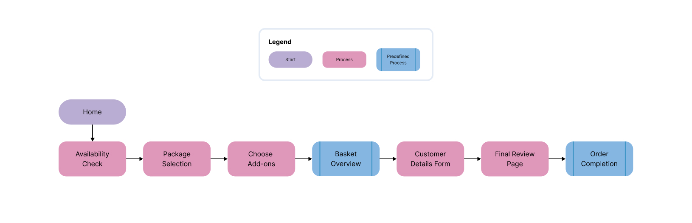

Maximum broadband speeds with maximum savings. A data-driven redesign that delivered +30% conversions, −25% drop-off rate, and 80% mobile orders.

Overview
Maxfibre's existing website had high drop-off during the checkout process and poor mobile performance despite significant mobile traffic. The redesign needed to simplify the sign-up journey, clarify the pricing tiers, and make the experience genuinely faster on mobile.
Project goals
UX Research
Using Hotjar heatmaps and Google Analytics funnels, I identified where users were dropping off and why. Session recordings revealed confusion at the plan-selection and postcode-verification steps.
MAX 900
Top-tier plan for power users and households
MAX 600
High-speed plan for streaming-heavy homes
MAX 300
Mid-range plan for everyday browsing
MAX 150
Entry-level plan for light users
Competitive Analysis
I benchmarked Maxfibre against four major UK broadband providers to understand best practices in plan comparison, checkout UX, and mobile optimisation.
Sky
Strong brand trust; plan comparison table hard to scan on mobile
Virgin Media
Fast checkout; confusing bundle upsells created friction
BT
Comprehensive plans; too many steps before seeing pricing
Hyperoptic
Clean design; postcode check well-integrated but plan cards lacked clarity
Opportunity: No competitor combined instant postcode checking with a truly clean, mobile-native plan comparison in a single step.
UX Design Process
To create a seamless broadband sign-up experience, the order journey was carefully structured to reduce drop-offs and increase efficiency. Each section was designed to minimise user effort while maintaining full transparency.

Order flow breakdown
A custom WCAG 2.0 compliant customer dashboard was also designed. Contact for access to the full interactive prototype.
Testing
A/B tests were run via postcode segments, allowing us to test plan card layouts, CTA copy, and checkout flows against distinct user groups without cross-contamination.
Results
The redesigned order journey delivered across every metric that mattered. A 30% lift in conversions, 25% fewer abandoned checkouts, and a 20% faster path to completion, achieved by removing confusion at the exact points the data told us users were leaving.
The mobile result was the most telling: 80% of completed orders came from mobile devices. That validated the mobile-first approach entirely and confirmed that previous drop-off wasn't user reluctance. It was friction the design had introduced.
Key takeaways